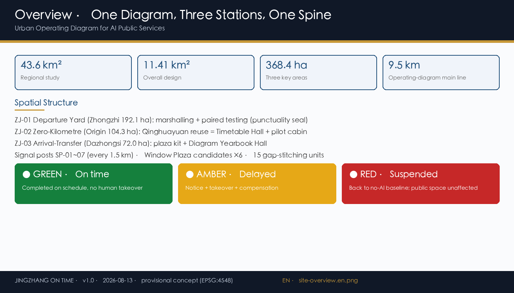
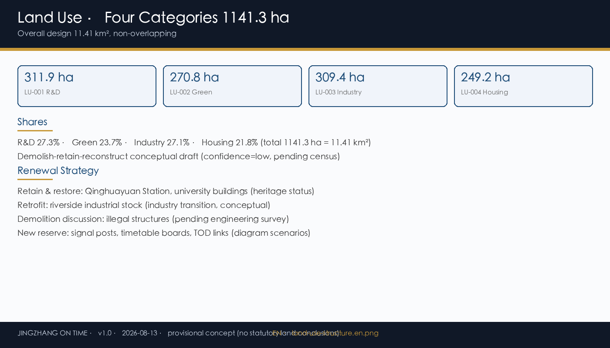
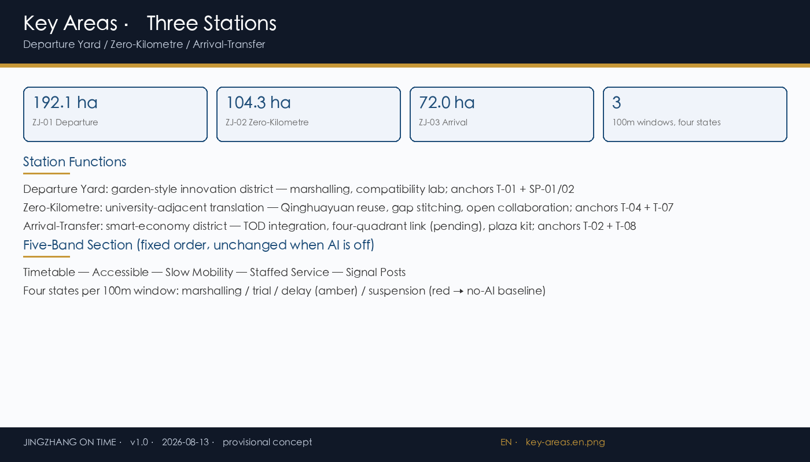
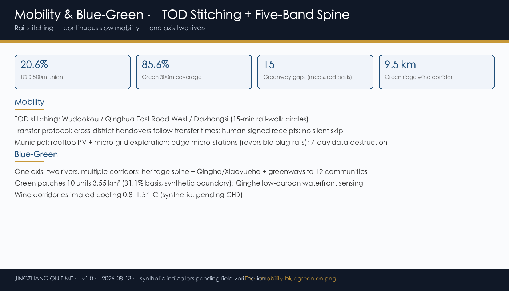
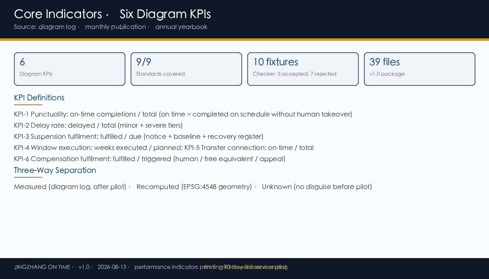

JINGZHANG ON TIME
Urban Operating Diagram for AI public services: punctuality verifiable, changes noticed, suspensions announced, delays compensated, transfers connected.





Summary
Proposition: AI public services should run like trains on a published timetable.
Structure: One Diagram, Three Stations, One Spine (9.5 km main line + Departure/Zero-Kilometre/Arrival-Transfer stations).
Governance: Operating Diagram schema v1.0 + checker (10 fixtures: 3 accepted, 7 rejected) + three-signal display + weekly window + gates G0-G4.
Implementation: 90-day first-service pilot; five-party operating community; six diagram KPIs.
Drawings generated on provisional boundaries; not statutory red lines. Version v1.0 · 2026-08-13.